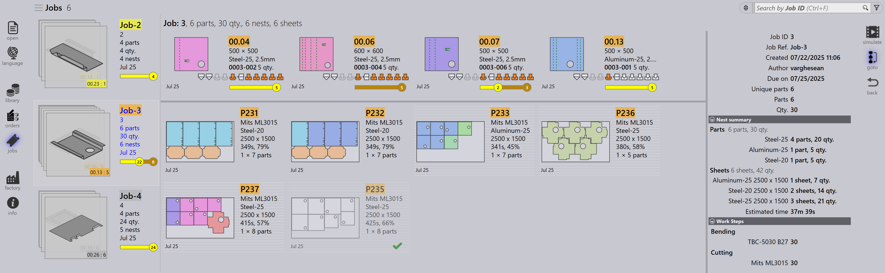
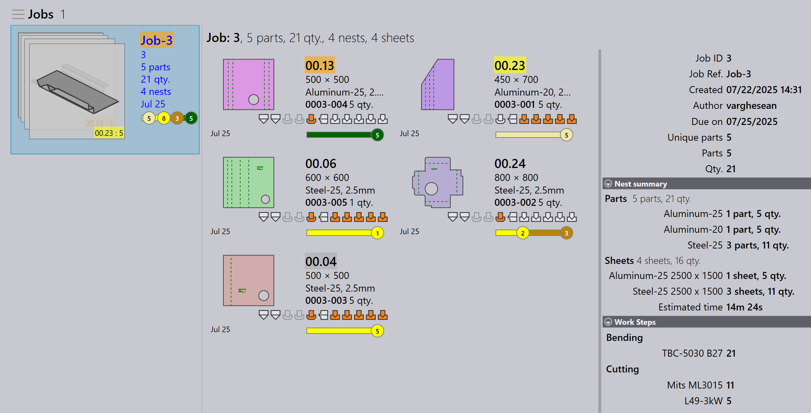

มุมมองงาน
ส่วนนี้อธิบายมุมมองต่างๆ ที่มีอยู่ในมุมมองงาน ได้แก่ งาน ชิ้นส่วน การจัดเรียง แก้ไข จำลอง และส่งออก
งาน
การเลือกตัวเลือก งาน จะแสดงรายการงานทั้งหมดที่ ตั้งค่าไว้ในซอฟต์แวร์ในปัจจุบัน คุณสามารถดับเบิลคลิกที่งานเพื่อดูรายละเอียดหรือ คลิกขวาเพื่อเข้าถึงตัวเลือกเพิ่มเติม
-
งานจะถูกแสดงในมุมมองไทล์ โดยแต่ละงานจะแสดงด้วยคุณสมบัติพื้นฐาน เช่น Job ID, Job Ref, ชื่อลูกค้า, จำนวนชิ้นส่วนทั้งหมด, วันครบกำหนด, แถบสถานะงาน เป็นต้น
-
ไทล์งานแต่ละรายการยังแสดงภาพชิ้นส่วนในรูปแบบการ์ดซ้อนกัน คุณสามมารถ เลื่อนดูชิ้นส่วนทั้งหมดในงานโดยใช้ล้อเลื่อนของเมาส์

รายละเอียดงาน
-
การดับเบิลคลิกที่ไทล์หรือกดปุ่ม Enter หลังจากเลือกไทล์ จะสลับมุมมองไปยังโหมดรายละเอียด
-
หน้ารายละเอียดจะแสดงรายการชิ้นส่วนพร้อมกับแผ่นที่จัดเรียง (เลย์เอาต์) หากมี
-
ใช้ปุ่มลูกศรขึ้น/ลงเพื่อสลับระหว่างงานในหน้ารายละเอียด
-
การเลื่อนล้อเมาส์เหนือกองชิ้นส่วนจะเน้นชิ้นส่วนทั้งในรายการ ชิ้นส่วนและเลย์เอาต์
-
การเลือกเลย์เอาต์จะเน้นเลย์เอาต์และชิ้นส่วนทั้งหมดที่จัดเรียงอยู่บนนั้นใน รายการชิ้นส่วน การเน้นจะปิดโดยอัตโนมัติหลังจากหนึ่งนาที

-
สรุปเนส:
-
ชิ้นส่วน: แสดงจำนวนรายการคำสั่งซื้อทั้งหมดและ ปริมาณทั้งหมดในงาน
-
แผ่น: แสดงจำนวนแผ่นที่จัดเรียงทั้งหมดพร้อมกับ ปริมาณแผ่นทั้งหมด
-
-
ขั้นตอนการทำงาน:
-
การดัด: แสดงเครื่องจักรที่กำหนดและปริมาณคำสั่งซื้อ ที่ต้องประมวลผล
-
การตัด: แสดงเครื่องจักรที่กำหนดและปริมาณคำสั่งซื้อ ที่ต้องประมวลผล
-
ลำดับความสำคัญ
-
ก่อนอื่น ให้คลิกไอคอน Jobs ที่ด้านซ้ายของหน้าจอ เลือกงานที่ คุณต้องการแก้ไข แล้วคลิก edit ที่ด้านขวาของหน้าจอ (ตรวจสอบให้แน่ใจ ว่าได้เลือกตัวเลือก Jobs แล้ว)
-
อีกวิธีหนึ่ง คลิกขวาที่งานที่เลือกและคลิกไอคอน เช็คเอาท์เอกสารเพื่อแก้ไข
-
เมื่อคุณคลิก edit หน้าต่างแก้ไขงานจะปรากฏขึ้น ในหน้าต่างนี้ คุณสามารถ ตั้งค่าหรือเปลี่ยนลำดับความสำคัญสำหรับงานได้

-
ตามลำดับความสำคัญชิ้นส่วนของงาน Job Reference ในไทล์งานจะ มีสีแบ่งตามนั้น
-
ชิ้นส่วนของงานจะถูกจัดเรียงตามลำดับความสำคัญก่อนและตามด้วยวันครบกำหนด ก็มีสีแบ่งตามลำดับความสำคัญด้วย
-
เมื่อทำการจัดเรียง ชิ้นส่วน Urgent จะถูกพิจารณาก่อน ตามด้วย High the Normal และสุดท้ายชิ้นส่วน Low priority จะถูกวางในพื้นที่ที่ เหลือบนแผ่นจัดเรียง
-
แผ่นจัดเรียงยังถูกจัดเรียงและแบ่งสีตามลำดับความสำคัญด้วย
| ลำดับความสำคัญของงาน | คำอธิบายสี |
|---|---|
|
Urgent |
|
Normal |
|
High |
|
Low |



สถานะ
-
แถบสถานะงานใช้รหัสสีเพื่อแสดงความคืบหน้าหรือสถานะของ งานโดยอิงจากปริมาณที่ประมวลผลหรือที่เหลือ
-
ชิ้นส่วนภายในงานและแผ่นจัดเรียงยังถูกเน้นด้วยสีที่ตรงกัน เพื่อแสดงสถานะแต่ละรายการภายใน JOB โดยรวม
-
การเข้ารหัสสีช่วยปรับปรุงการติดตามและทำให้มั่นใจว่าผู้ปฏิบัติงานสามารถ เห็นสถานะการผลิตได้อย่างรวดเร็ว


| สถานะงาน | คำอธิบาย |
|---|---|
|
ไม่พร้อม |
|
การเนส |
|
พร้อมใช้งาน |
|
Bend Planned |
|
ไม่พบแผ่น |
|
คิวการดัด |
|
คิวการตัด |
|
เสร็จสิ้น |


ชิ้นส่วน
มุมมองชิ้นส่วนที่ใช้งานอยู่จะแสดงชิ้นส่วนทั้งหมดที่อยู่ในขั้นตอนการดำเนินการ ภายในงานที่ใช้งานอยู่
แต่ละชิ้นส่วนจะแสดงเป็นไทล์ที่แสดงรายละเอียดหลัก เช่น ชื่อชิ้นส่วน ขนาด วัสดุ ความหนา และปริมาณ การแสดงตัวอย่างของ ชิ้นส่วนยังถูกแสดงด้วย
มุมมองนี้ช่วยให้ผู้ใช้ติดตามสถานะการประมวลผลของชิ้นส่วนแต่ละรายการและ ติดตามความคืบหน้าของงานที่กำลังดำเนินการ

การจัดเรียง
มุมมองการจัดเรียงที่ใช้งานอยู่จะแสดงการจัดเรียงทั้งหมดที่อยู่ในขั้นตอนการดำเนินการ ภายในงานที่ใช้งานอยู่
แต่ละการจัดเรียงจะแสดงด้วยรายละเอียดที่เกี่ยวข้อง เช่น จำนวนชิ้นส่วน และสถานะการประมวลผล การแสดงเลย์เอาต์ของชิ้นส่วนที่จัดเรียง ยังถูกแสดงด้วย
มุมมองนี้ช่วยให้ผู้ใช้ติดตามความคืบหน้าการจัดเรียงและติดตามวิธีการจัดวาง และประมวลผลชิ้นส่วนบนแผ่น

แก้ไข
ตัวเลือกแก้ไขช่วยให้คุณสามารถแก้ไขรายการที่เลือกได้
โดยอิงจากมุมมองปัจจุบัน อินสแตนซ์ที่เลือกจะถูกเปิดสำหรับการแก้ไข:
-
ในมุมมองงาน งานที่เลือกจะถูกเปิดสำหรับการแก้ไข
-
ในมุมมองชิ้นส่วนที่ใช้งานอยู่ ชิ้นส่วนที่เลือกจะถูกเปิดสำหรับการแก้ไข
-
ในมุมมองการจัดเรียงที่ใช้งานอยู่ การจัดเรียงที่เลือกจะถูกเปิดสำหรับการแก้ไข

ส่งออก csv
ตัวเลือกส่งออกช่วยให้คุณเลือกข้อมูลงานและส่งออกไปยังไฟล์ CSV
-
คลิกไอคอน jobs
-
คลิกตัวเลือก export ที่ด้านขวาของหน้าจอ

-
กล่องโต้ตอบจะปรากฏขึ้นแสดงฟิลด์ที่มี:

-
เลือกกล่องกาเครื่องหมายสำหรับฟิลด์ที่คุณต้องการส่งออก
-
ใช้ตัวเลือก Group By หากคุณต้องการจัดกลุ่มข้อมูลตาม ฟิลด์ที่เลือก
-
คลิก Export เพื่อสร้างไฟล์ CSV
ข้อมูลเพิ่มเติม
ยังมีไอคอนอีกสามไอคอนที่ด้านขวาของหน้าจอ ได้แก่ จำลอง, Goto และ ย้อนกลับ
-
Simulate จะเปิดรายการที่เลือกสำหรับมุมมองรายละเอียดที่มากขึ้น
-
Goto จะสลับโฟกัสและการแสดงผลไปยังชิ้นส่วนหรือการจัดเรียงที่ เลือก
-
Back จะกลับไปหนึ่งระดับจากตำแหน่งที่คุณอยู่ในขณะนี้ เช่น การคลิก ย้อนกลับ ขณะอยู่ในการจำลองจะนำคุณกลับไปยัง งานหลัก และจากงานจะนำคุณกลับไปยังการแสดงงานหลัก